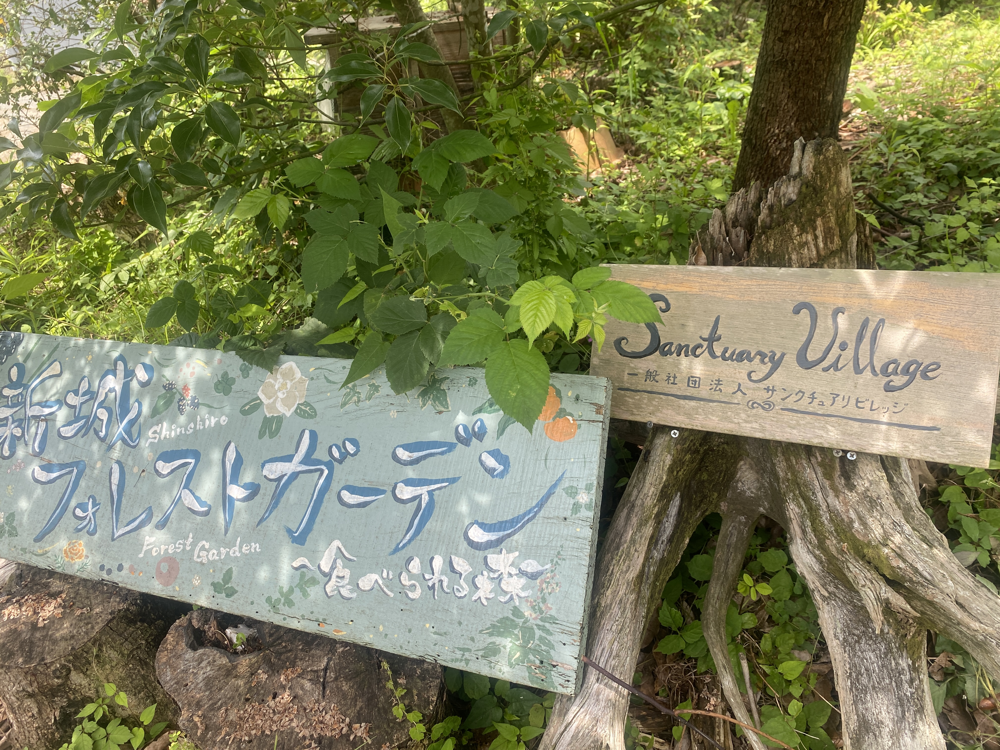
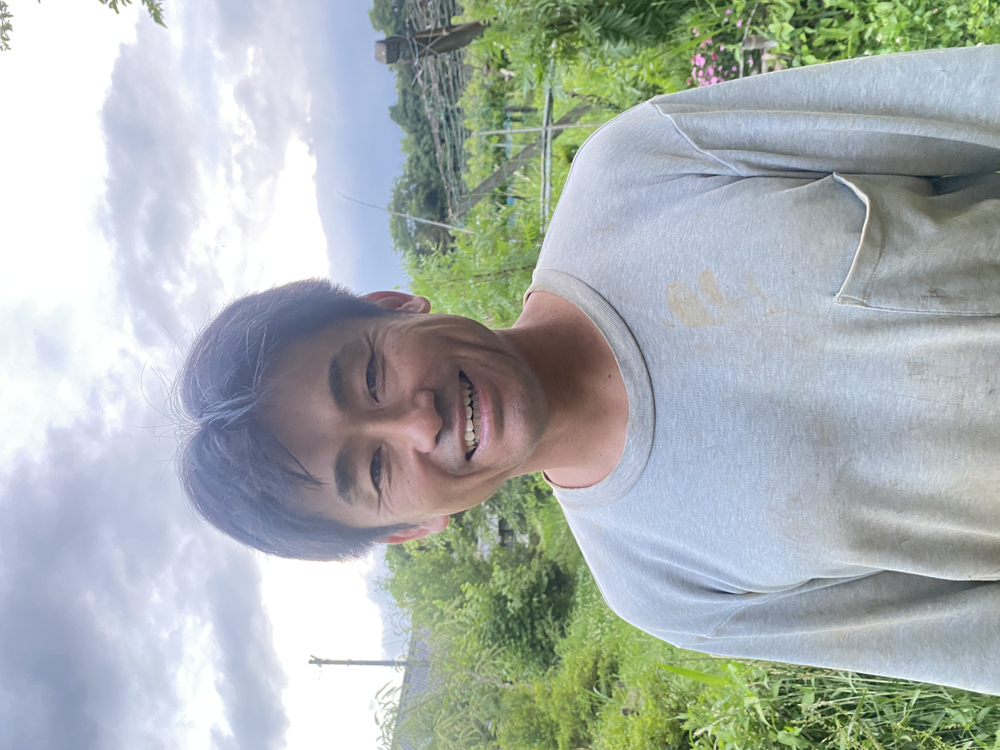
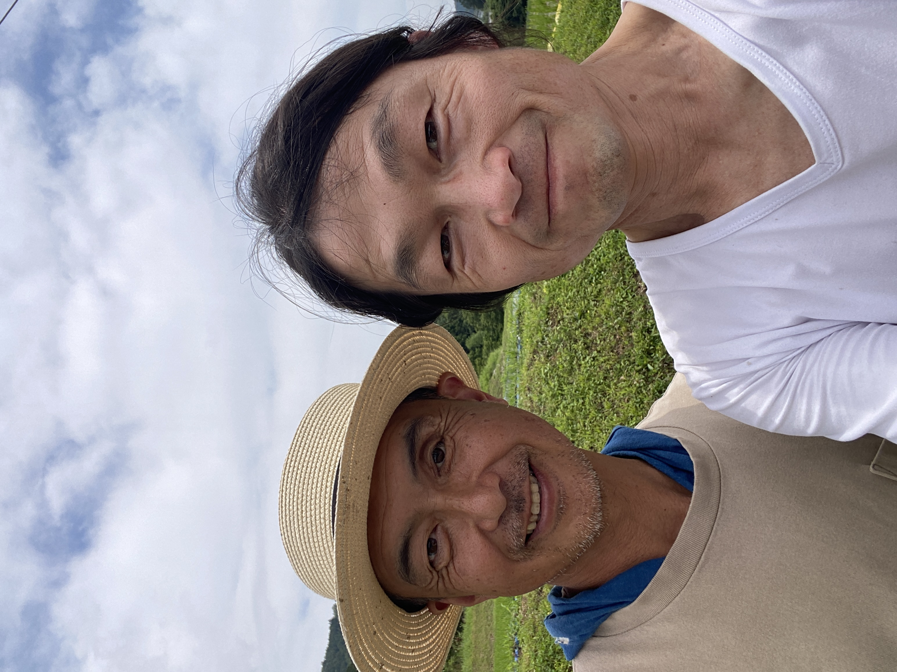
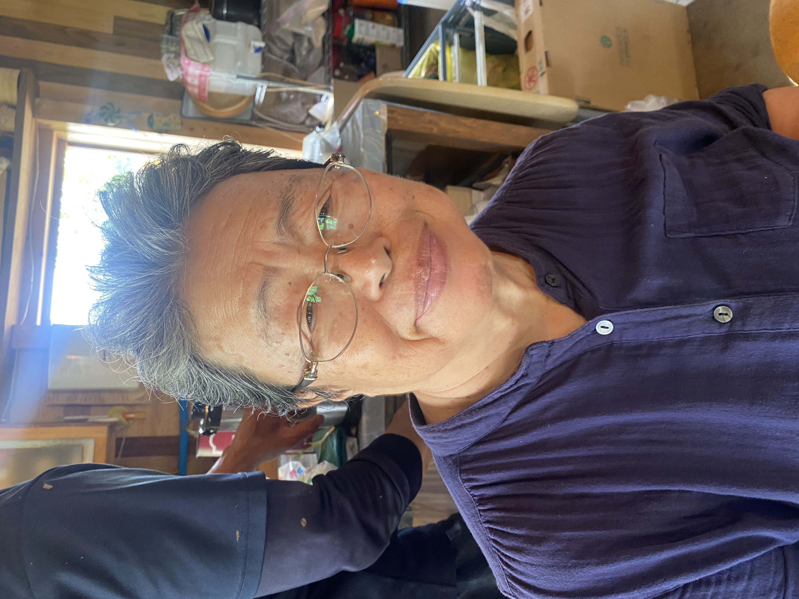
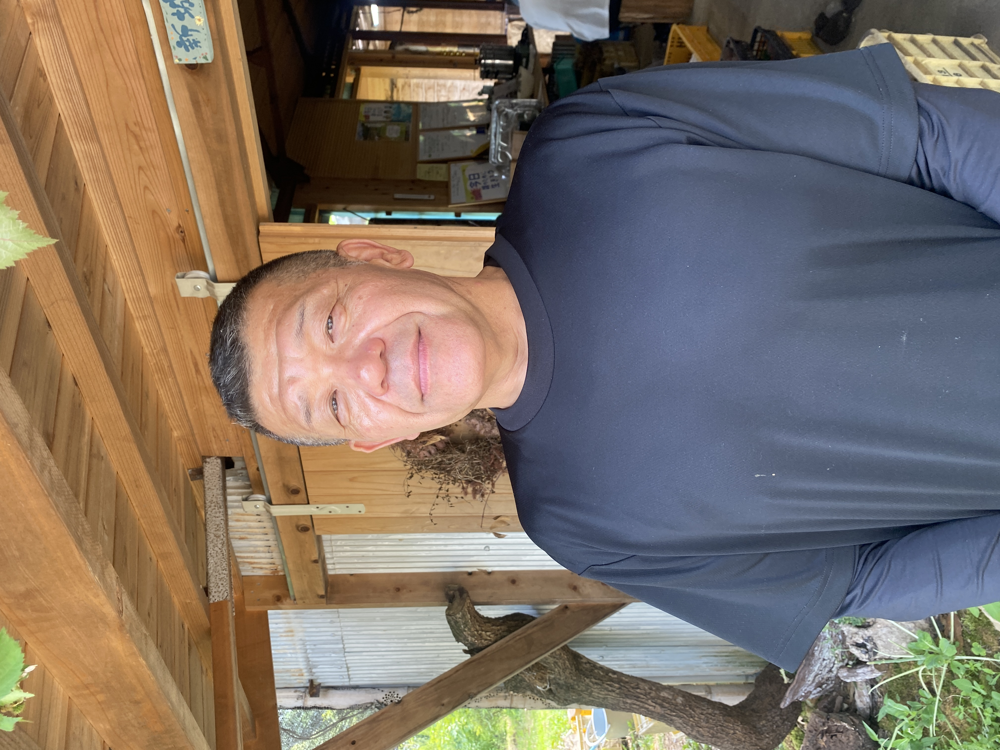
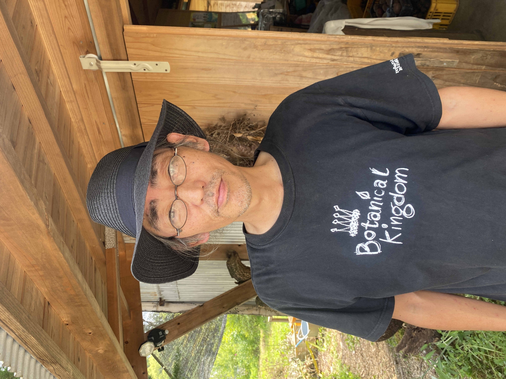
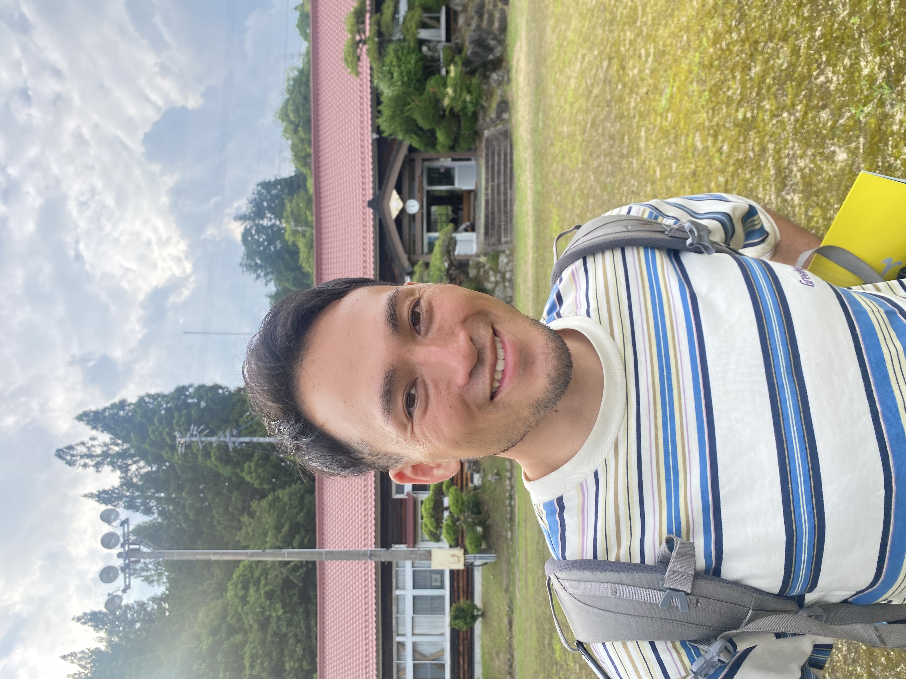

新城 フォレストガーデン 聞き書き
人が見えると、
場が見えてくる。
フォレストガーデンで出会った人たちの言葉を、少しずつ聞き、残していくページです。 その人が何を大切にしているのか。どんな想いで、この場に関わっているのか。 説明しすぎるのではなく、言葉の奥にあるものが、自然とにじみ出るように。 そんな聞き書きを重ねていきます。
聞くこと、残すこと、場に返すこと。その循環の中で、人は関係者になっていく。


People
この場を
つくっている人たち
出会った順に、一人ずつ。声、写真、大切にしているものを重ねながら、この場の輪郭を少しずつ残していきます。

きっちゃん
6月18日 / 福島県から新城へ
仕事を探しているようで、気づけば誰かの困りごとを拾っている人。
読む 公開中たくちゃん
野澤卓央さん / フォレストガーデン主催者
あり方120％、やり方は風まかせ。でもなぜか場が開いていく人。
読む 公開中のんちゃん
6月18日 / 野澤克仁さん・土地を守ってきた人
土地の歴史を、特製カレーでそっと食卓に出してくれる人。
読む 公開中神野さん
6月18日 / 岐阜から新城へ
微生物と会話しているようで、気づけば仕事と暮らしまで発酵させている人。
読む 公開中
久野陽子さん
6月19日 / ようこちゃん・自然農法イベント講師
食卓に座っただけなのに、気づけば夢とお金と音楽と本の話まで巡らせている人。
読む 公開中
古橋さん
6月19日 / 移住者
Googleでは出てこない、暮らしの検索エンジンみたいな人。
読む 公開中
あっちゃん
6月19日 / 原田淳さん
「ここ、なんか気持ちいいな」の正体を、だいたい設計している人。
読む 公開中
今井真央くん
新城市地域おこし協力隊 / つなぐ人
ふわっとした未来の話を、なぜか具体的な次の一手まで持っていく人。
読むHow it grows
このページの育て方
その人が何を大切にしているのか、言葉の奥にあるものまで聞く。
整えすぎず、作りすぎず、本人の呼吸が残る聞き書きにする。
受け取った言葉を、読める形にして場へ返す。その人の存在が、もう一度この場の力になるように。
このページは、フォレストガーデンを説明するためのページではありません。 ここに関わる人の言葉を通して、この場がどんなふうに育っているのかを残していく記録です。
聞くこと。言葉にすること。場に返すこと。その小さな循環の中で、一人ひとりの存在が見えはじめる。
その人の言葉を聞くことは、その人の真実を見極め、本来の美しさに触れ、個性を磨く入口でもある。
フォレストガーデンは、誰かが用意した場所ではなく、関わる人たちの言葉と手によって、命の輝きが少しずつ見えてくる場なのだと思います。